17/07/2026 — Hãy nhìn lại bài viết từ 16 năm trước này. Chúng ta đã tiến xa đến đâu với những sóng T này?
Bản dịch tiếng Việt của bài "Let’s look back at this post from 16 years ago. How far have we come with these T waves?" – Dr. Smith’s ECG Blog. Giữ nguyên toàn bộ 12 hình ảnh của bản gốc.
Steve đã đăng bài viết tuyệt vời này cách đây 16 năm, so sánh 2 loại sóng T lớn bất thường quan trọng.
Nhìn lại bài viết này, chúng ta có thể thấy: những gì chúng tôi đã dạy các bạn khi đó, giờ đây cuối cùng chúng tôi đã có thể định lượng, khách quan hóa, và (nhờ AI) giúp bất kỳ ai, ở bất kỳ trình độ đào tạo nào, phát hiện và phân biệt được cả hai hình ảnh đe dọa tính mạng này.
Dưới đây là hai trong số các điện tâm đồ đó, tạm thời chưa tiết lộ chẩn đoán. (trong bài viết gốc còn vài điện tâm đồ hấp dẫn khác mà bạn cũng nên xem!):
Điện tâm đồ #1:

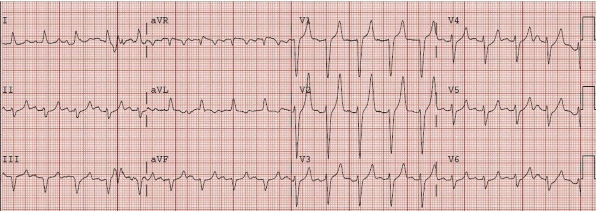
Điện tâm đồ #2:

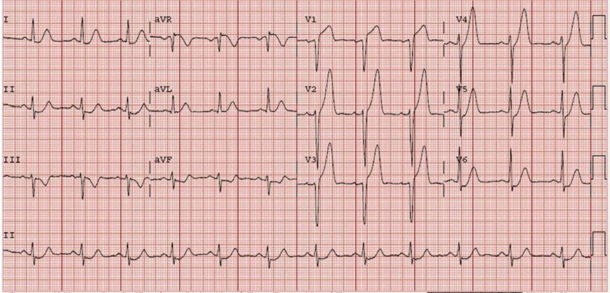
Đây là các chuyển đạo trước tim đặt cạnh nhau:

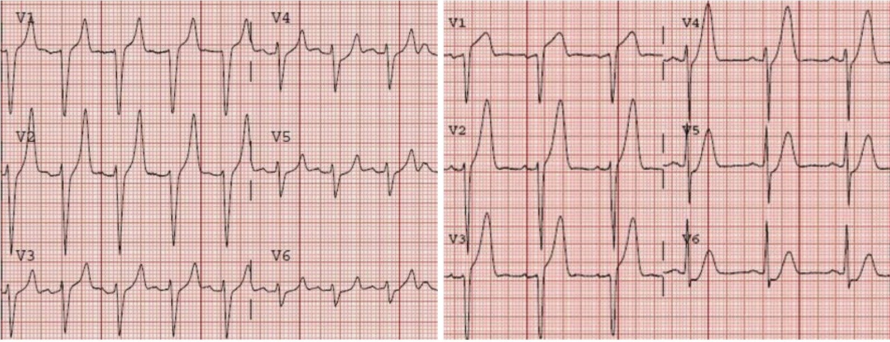
Mỗi bệnh nhân này đang mắc bệnh gì? Bạn có thể dễ dàng chẩn đoán cả hai và cứu sống họ không?
Và bạn có thể phân biệt chúng với vô số bệnh nhân bình thường có sóng T nền lớn bình thường, không mang hình ảnh đặc hiệu nào trong hai hình ảnh trên không?
Nếu bạn đã theo dõi blog này từ lâu, thì có, bạn làm được. Nhưng bạn thuộc nhóm cực kỳ thiểu số trong giới lâm sàng. May mắn thay, giờ đây AI cũng làm được điều đó.
Cả sóng T tối cấp (hyperacute) lẫn sóng T do tăng kali máu đều có thể “to ra” và cân đối hơn so với sóng T nền của bệnh nhân. Tuy nhiên, chiều cao hay biên độ sóng T KHÔNG xác định được loại nào trong hai loại này, cũng không phân biệt được chúng với sóng T biến thể bình thường.
Chúng tôi đã công bố nghiên cứu chất lượng cao nhất cho đến nay về những gì định nghĩa sóng T tối cấp (HATW) như một hình ảnh có độ đặc hiệu cao của tắc mạch vành cấp, ngay cả khi không có ST chênh lên “đủ tiêu chuẩn chẩn đoán”. Chúng tôi đã chứng minh rằng sóng T tối cấp được xác định bởi:
“Độ lớn” (magnitude) tăng và “độ cân đối” (symmetry) tăng.
Đây là tài liệu tham khảo: Meyers HP, Simančík F, Herman R, và cs. Hyperacute T Waves are specific for Occlusion Myocardial Infarction, even without diagnostic ST elevation. Tạp chí JACC Adv [Internet], năm 2025;(102120):102120. Truy cập tại: http://dx.doi.org/10.1016/j.jacadv.2025.102120
Độ lớn của sóng T là hàm số của diện tích dưới toàn bộ “đường cong” sóng T so với biên độ phức bộ QRS đi trước nó [sóng T lớn đến mức nào (to, phồng, đồ sộ — chỉ một phần trong đó chịu ảnh hưởng của chiều cao hay biên độ) so với phức bộ QRS đã tạo ra nó]. Sóng T bình thường có độ lớn nhỏ hơn, còn HATW có độ lớn lớn hơn.
Độ cân đối của sóng T là hàm số của thời điểm đỉnh sóng T xuất hiện dọc theo toàn bộ khoảng ST-T. Sóng T bình thường bị “đẩy sang phải”, nghĩa là đỉnh của chúng xuất hiện muộn hơn trong khoảng ST-T (thường muộn hơn nhiều so với mốc 50%), trong khi HATW có độ cân đối tăng (đỉnh dịch về sớm hơn trong khoảng này, đôi khi đúng ở khoảng 50% của khoảng).

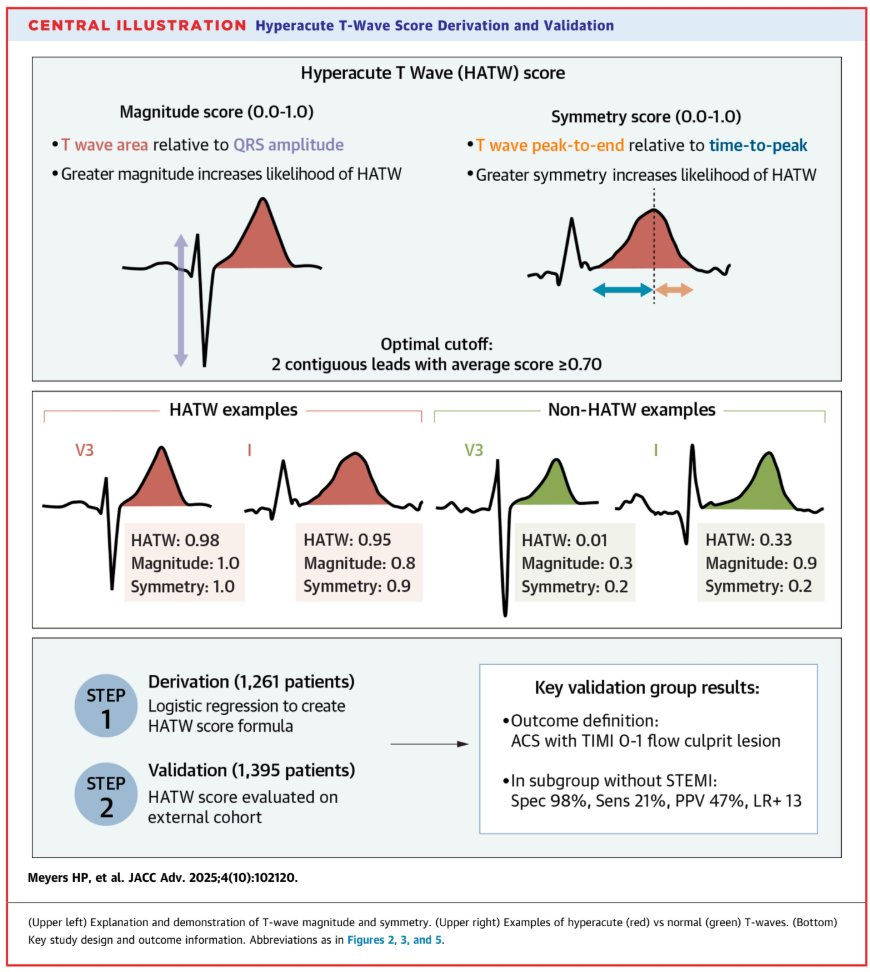
Cuối cùng, nếu bạn chỉ cần lấy một HATW theo các định nghĩa trên, rồi THÊM đoạn ST chênh xuống ở cùng chuyển đạo đó, thì nó trở thành phân nhóm NHỎ XÍU nổi tiếng của HATW được gọi là sóng T tối cấp “de Winter”.
Sóng T do tăng kali máu, dù cũng có độ cân đối tăng so với sóng T nền của bệnh nhân, thường lại hoàn toàn ngược lại xét về độ lớn: sóng T do tăng kali máu có diện tích sóng T giảm rõ rệt so với HATW.
Khi dạy kỹ năng thị giác này cho học viên, tôi mô tả chúng như sau:
HATW:
Giống như bạn đang bơm phồng sóng T bằng không khí từ bên dưới
Tăng kali máu:
Giống như bạn đang dựng một cái lều trong sóng T bằng cách đẩy một cây cột lên ở chính giữa
Tôi nghĩ phần tiếp theo này tôi đã “mượn” của Ken Grauer:
Tôi cũng mô tả sóng T do tăng kali máu giống như tháp Eiffel, còn HATW giống như tòa nhà Quốc hội Hoa Kỳ (US Capitol) (phải thừa nhận là sau khi đã cắt bỏ phần chóp trên cùng…).

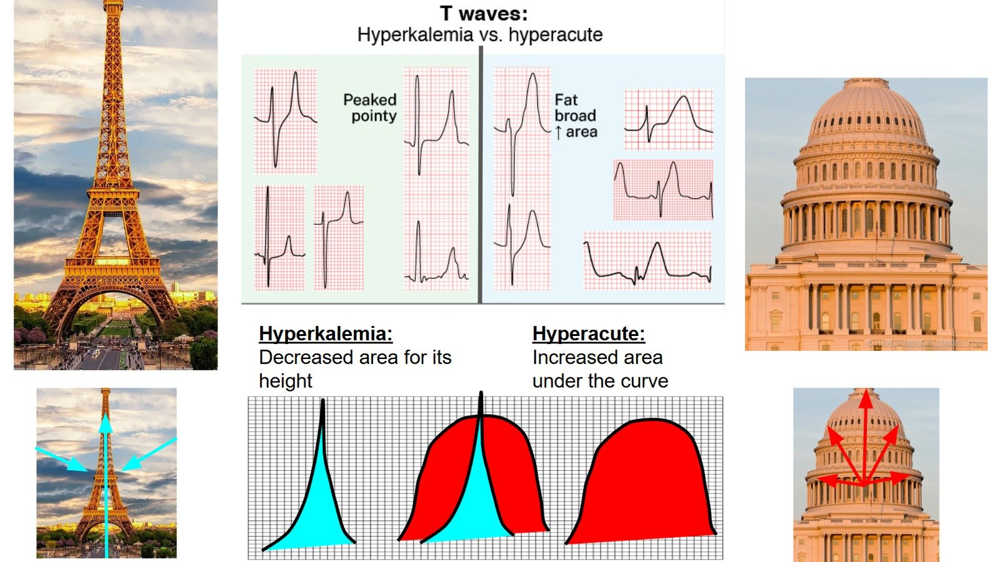
Vậy đây là “đáp án” cho các ca ở trên:

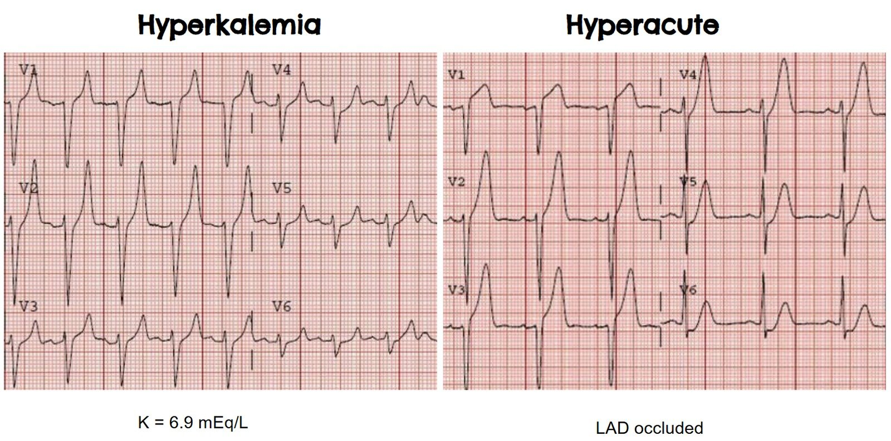
Hãy xem cả Queen of Hearts lẫn công thức HATW khách quan của chúng tôi đều dễ dàng phân biệt được chúng như thế nào, và mô hình tăng kali máu sắp ra mắt của chúng tôi (biệt danh “Karl”) cũng làm được như vậy.

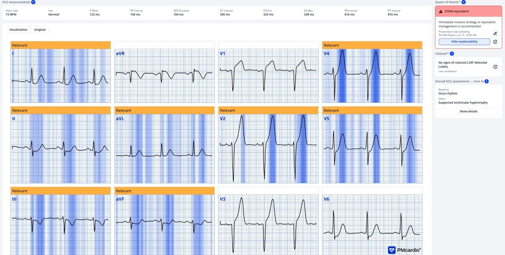

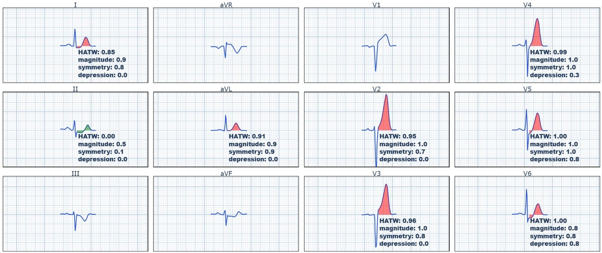

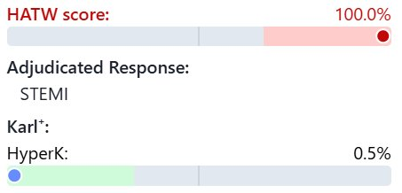
Giờ đến điện tâm đồ tăng kali máu:

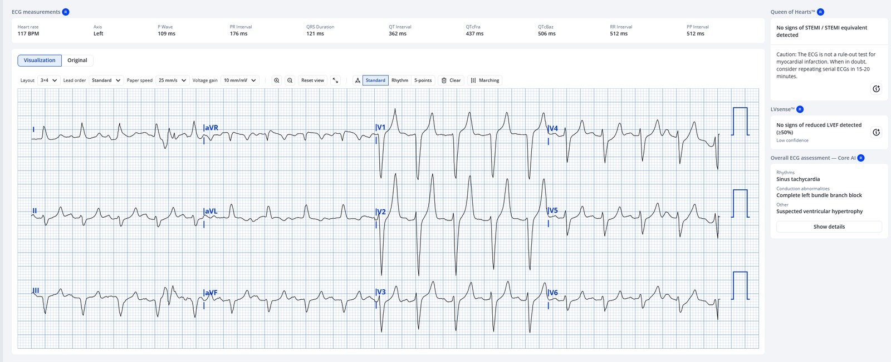

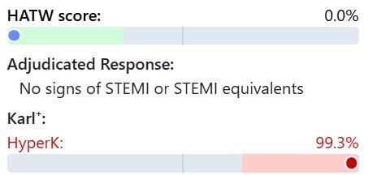
= = =
==================================
BÌNH LUẬN CỦA TÔI, bởi KEN GRAUER, MD (17/7/2026):
Tôi thấy thật hấp dẫn và sáng tỏ khi quay lại xem những gì chúng ta từng nghĩ trong quá khứ — và những gì chúng ta đã học được qua bao năm tháng. Khi có dịp làm điều đó (như thỉnh thoảng vẫn xảy ra khi tôi gặp một ca mà nhiều năm trước tôi đã từng đọc một điện tâm đồ cũ của chính ca mà tôi đang xem lại) — tôi thường thấy mình khiêm tốn hơn khi nhìn lại những gì mình nghĩ trong những năm trước (và đôi khi tôi ngạc nhiên khi thấy hồi đó mình biết ít đến thế nào — và từ đó đến nay mình đã học thêm được bao nhiêu).
- Và vì vậy — tôi thấy thú vị khi quay lại bài viết ngày 12 tháng Một năm 2010 của Dr. Smith mà Dr. Meyers điểm lại trong ca hôm nay. Quả nhiên — những gì Dr. Smith viết cách đây 16 năm (dựa trên kỹ năng đọc điện tâm đồ phi thường của ông, được tăng cường bởi trực giác điện tâm đồ) — giờ đây đã được kiểm chứng và định lượng bằng nghiên cứu của Smith/Meyers và đóng góp của họ vào việc phát triển mô hình AI QOH (Queen-Of-Hearts).
= = =
Nhìn lại thêm một lần …
Tôi đã đặt lại dưới đây trong Hình 1 — 2 điện tâm đồ mà Dr. Meyers dùng để mở đầu phần bàn luận của mình.
- Như Dr. Meyers đã nêu — tôi là người phổ biến khái niệm sóng T “tháp Eiffel” vào đầu những năm 1980. Ban đầu tôi so sánh hình ảnh “sóng T cao, nhọn, đỉnh sắc” với hình dáng tòa nhà Empire State. Nhưng tôi sớm nhận ra rằng dáng thon nhọn dần của tháp Eiffel giống với hình thái sóng T của “tăng kali máu kinh điển như sách giáo khoa” hơn nhiều, với nhánh lên và nhánh xuống của sóng T cân đối, kết thúc bằng một đáy sóng T hẹp đến bất ngờ. Tôi thấy đáy sóng T hẹp này cũng đặc trưng cho tăng kali máu không kém gì đỉnh nhọn của sóng T. Các đặc điểm này hiện diện rõ ràng ở điện tâm đồ #1.
- LƯU Ý: Từ đầu những năm 1980 đến nay, tôi đã thấm thía rằng nhiều bệnh nhân tăng kali máu “không chịu đọc sách giáo khoa” — đến mức hình ảnh sóng T như ở điện tâm đồ #1 không phải lúc nào cũng gặp khi K+ tăng.
Điện tâm đồ #2 truyền tải một số bài học quan trọng. Bao gồm những điều sau:
- Không gì thay thế được việc so sánh đặt cạnh nhau khi đánh giá các điện tâm đồ liên tiếp. Tôi tự chứng minh điều này với bản thân mỗi lần tôi đi “đường tắt”, nhìn nhanh bản ghi này trước rồi đến bản ghi kế tiếp mà không đặt chúng cạnh nhau như chúng ta làm ở Hình 1.
- Chẳng phải dễ nhận ra sự khác biệt về hình thái sóng ST-T hơn hẳn khi chúng ta đặt điện tâm đồ #1 và #2 cạnh nhau ở Hình 1 sao? Làm như vậy giúp mắt chúng ta nhận ra ngay đỉnh sóng T “béo hơn” và dáng “đồ sộ hơn” với đáy sóng T rộng hơn ở rất nhiều chuyển đạo của điện tâm đồ #2.
- So sánh đặt cạnh nhau 2 bản ghi ở Hình 1 cũng giúp chúng ta nhận ra ngay ST chênh xuống soi gương (reciprocal) dạng dốc xuống ở mỗi chuyển đạo thành dưới của điện tâm đồ #2, điều không thấy ở điện tâm đồ #1.
- Dù đã nói như trên — khi lần đầu nhìn điện tâm đồ #2, ban đầu tôi chưa chắc chắn rằng bản ghi này thể hiện một OMI cấp cho đến khi tôi tập trung vào chuyển đạo V1! Trong khi mọi chuyển đạo ở điện tâm đồ #1 đều cho thấy sóng T cao nhọn với đáy hẹp — thì chuyển đạo V1 ở điện tâm đồ #2 khác biệt rõ khi cho thấy đoạn ST thẳng đuỗn rõ rệt với ST chênh lên không tương xứng (đánh giá “tính không tương xứng” dựa trên mức ST chênh lên tại điểm J so với độ sâu khiêm tốn của sóng S ở chuyển đạo V1 này). Mọi chút nghi ngờ còn sót lại của tôi về tính cấp tính của quá trình ở điện tâm đồ #2 đã lập tức bị xóa bỏ khi thấy sóng ST-T này ở chuyển đạo V1.
- ĐIỂM THEN CHỐT (PEARL): Một khi bạn đã xác định được thay đổi sóng ST-T ở 1 hoặc 2 chuyển đạo mà bạn biết chắc là thực sự bất thường — việc nhận ra những bất thường ít rõ rệt hơn ở các chuyển đạo khác trở nên dễ dàng hơn nhiều.
- Trong bối cảnh ST chênh lên rõ rệt ở chuyển đạo V1 này — mức ST chênh lên ít hơn ở chuyển đạo V2 và V3 là có ý nghĩa.
- Điểm J chênh xuống bắt đầu từ chuyển đạo V4 — và tăng dần cho đến khi chúng ta thấy ST chênh xuống dẹt, rõ rệt ở chuyển đạo V6.
- Có mất sóng R khi chúng ta đi từ chuyển đạo V2 sang V3.
- Tất cả các chuyển đạo trước tim đều cho thấy sóng T tối cấp — với sóng T “béo ra” rõ rệt ở chuyển đạo V5,V6.
- Sóng T tối cấp thấy ở các chuyển đạo bên cao chuyển đạo I và aVL (Các sóng T này “béo”-ở-đỉnh và rộng-ở-đáy hơn nhiều so với mong đợi) — kèm theo một ít ST chênh xuống cũng thấy ở chuyển đạo I.
- Như đã nêu trước đó — có ST chênh xuống soi gương ở mỗi chuyển đạo thành dưới (với phần cuối sóng T dương rõ rệt ở chuyển đạo II và aVF).
- Có ST chênh lên ở chuyển đạo aVR.
- Kết luận: Bất thường sóng ST-T rõ rệt thấy ở cả 12 chuyển đạo của điện tâm đồ #2. Bản ghi này có giá trị chẩn đoán nhồi máu lan rộng đang diễn tiến do tắc đoạn gần LAD cấp (cho thấy sóng T de Winter + thiếu máu cục bộ dưới nội tâm mạc).
= = =
Hình 1: Tôi đã đặt lại 2 điện tâm đồ đầu tiên của ca hôm nay.

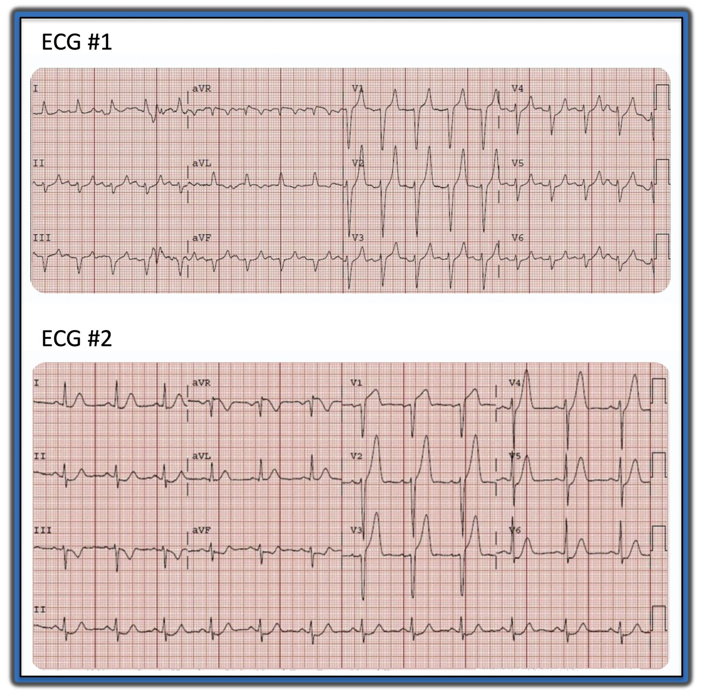
= = =
= = =